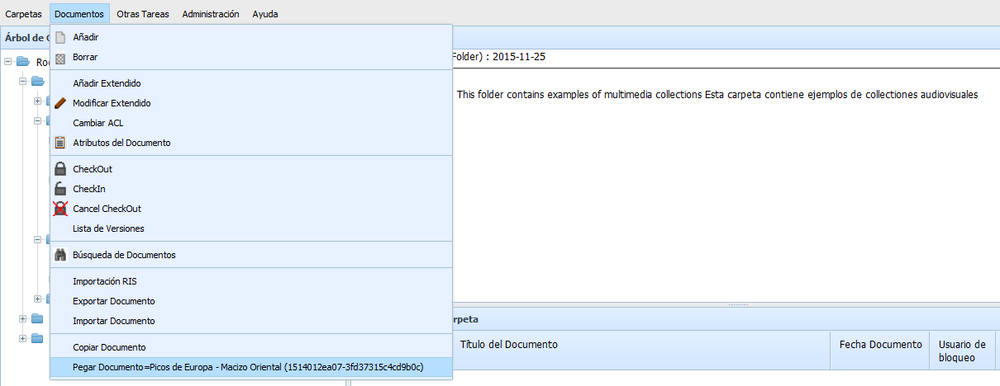

Las funciones de mover un documento permiten trasladar un documento entre carpetas de forma sencilla.
Para ello debe seleccionarse un documento y activar "Documentos -> Copiar". Esta accion selecciona el documento como elemento a copiar, activando en la opción "Documentos -> Pegar" y mostrando el título y código único del documento que será copiado. Después debe elegirse la carpeta destino y elegir "Documentos -> Pegar". El documento se moverá a la nueva carpeta, desactivandose la selección. Antes de pulsar "Pegar", es posible elegir un nuevo documento, que sustituirá al anterior.
No podrá realizarse si el documento ya está bloqueado, o si no se dispone de permisos de borrado como mínimo sobre el documento.
Debe tenerse en cuenta que el mover a otra carpeta NO CAMBIA LOS PERMISOS del documento, se mantiene el ACL que tenia antes de ser movido. Igualmente debe recordarse que el movimiento a otra carpeta puede implicar que no se apliquen procesos programados anteriormente, o que se apliquen otros nuevos (Expurgo, Exportación, ...), ya que la mayoría de los procesos tiene un ámbito de aplicación de ramas de carpetas.
